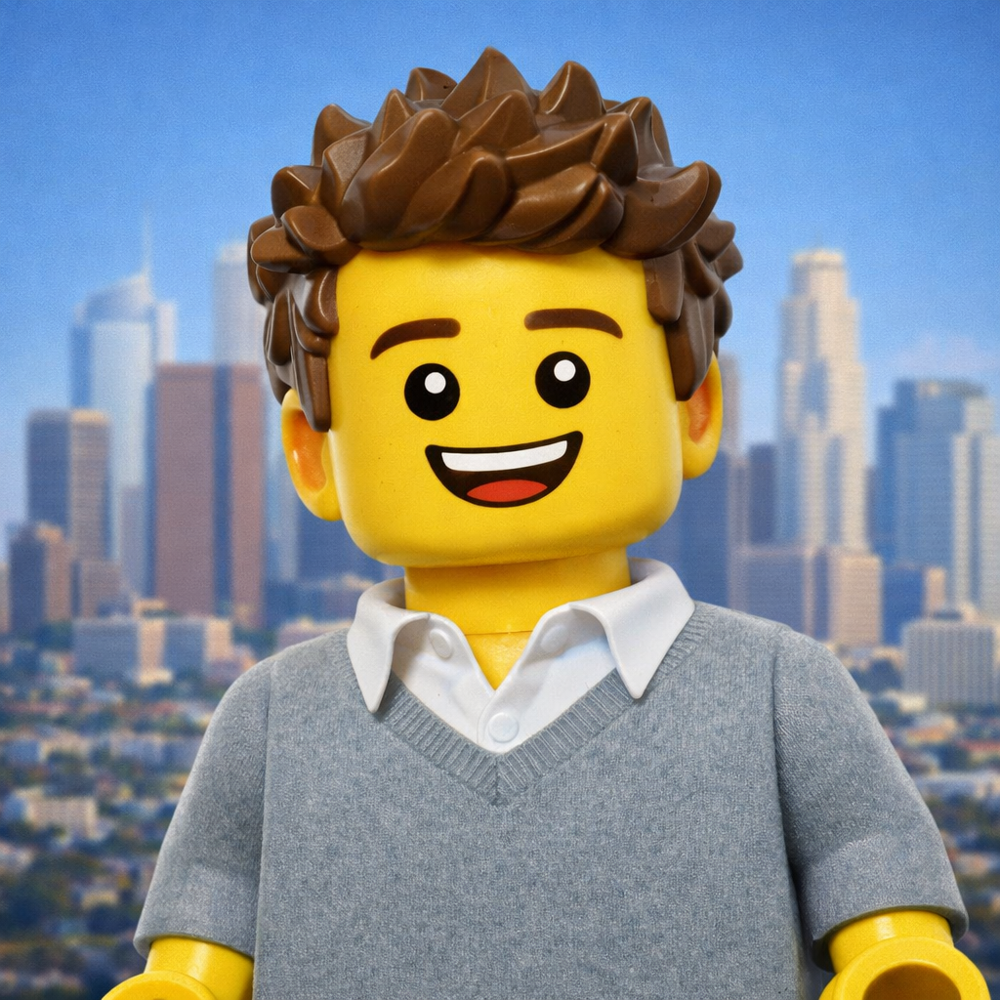
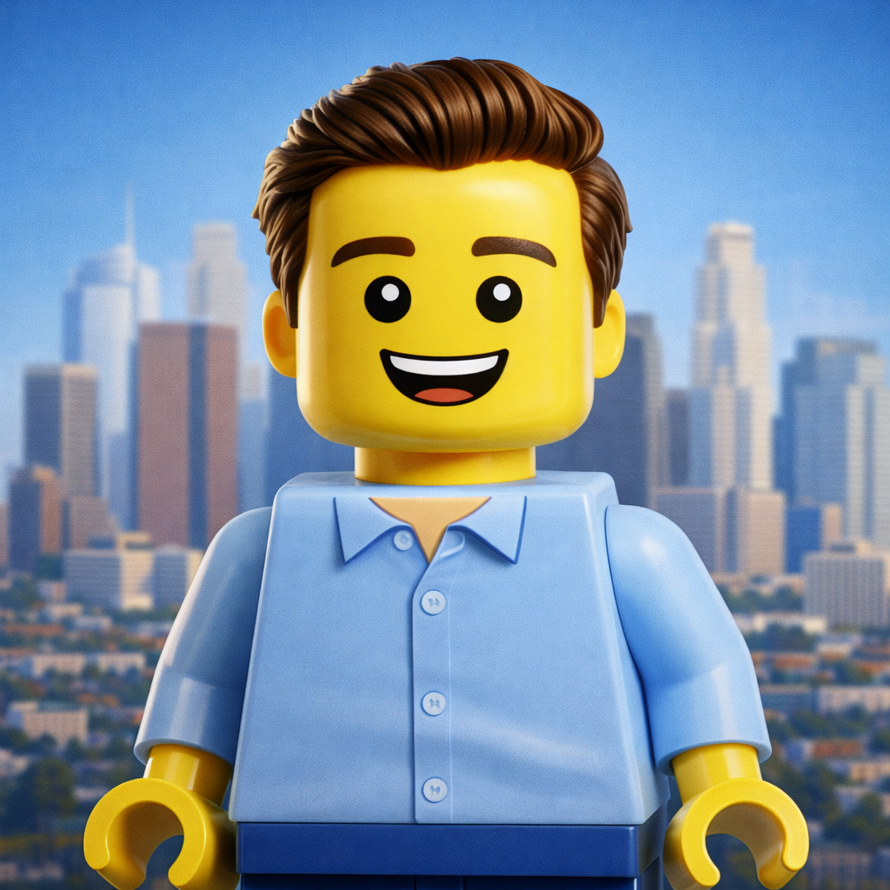

The Founders

Coby Palivathukal
Co-founder & Head of Creative
Coby is an award-winning filmmaker and creative technologist working at the intersection of animation, storytelling, and emerging media.
He currently works as a Producer at Meta, where he leads the production of visual assets for the Facebook brand and helps integrate generative AI tools into creative workflows.
Coby holds a BA in Philosophy with a minor in Film & Media Studies from Stanford University and an MFA in Animation & Digital Arts from USC's School of Cinematic Arts.

Brendan Healy
Co-founder & Head of Operations
Brendan is a product builder working at the intersection of media, technology, and creative systems.
He currently serves as a Product Owner at Apple TV, where he develops internal tools and automation platforms that power studio operations and large-scale content workflows.
He holds a BA in History with a minor in Film from UCLA and will begin his MBA at Wharton later this year.